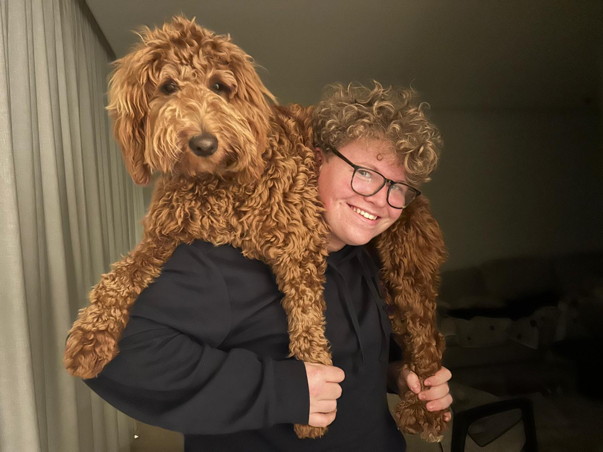

Koersen
Ik hou van koersen. Dit is een zeer bekende en competitieve sport waarin de UCI de kampioenschappen mogelijk maakt.
Bezoek de UCI-site
Ik ben Lenn Decruyenaere, 18 jaar oud.
Ik hou van koersen. Dit is een zeer bekende en competitieve sport waarin de UCI de kampioenschappen mogelijk maakt.
Bezoek de UCI-siteOok hou ik van gamen. Steam is een launcher die miljoenen games verkoopt, waarvan er ook heel veel gratis zijn.
Bezoek de Steam-siteIk hou van brommer rijden. Ik heb zelf een Rieju MRT Trophy 50cc.
Bezoek de Rieju-siteIk kijk graag eens een serie en mijn top 3 favoriete series zijn:

Alles kan bekeken worden via de streamingdienst Netflix.
Bezoek Netflix| Vak | Lenn | Ralph | Rune | Simon |
|---|---|---|---|---|
| Web Development I | 15 | 14 | 16 | 12 |
| Fundamentals of programming I | 13 | 15 | 11 | 14 |
| Computer systems | 14 | 12 | 13 | 15 |